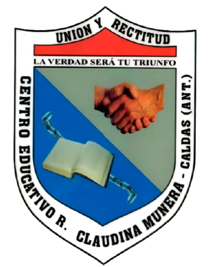

🎙️ Nuevo registro sonoro
Primero obtendremos tu ubicación.
Comparte sonidos del territorio evitando datos personales o imágenes sensibles.

Cartografía sonora de nuestro territorio es una iniciativa que invita a escuchar, registrar y valorar los sonidos que hacen parte de la vida de Caldas, Antioquia.
Cada punto del mapa reúne un lugar, una imagen y una grabación. Así construimos colectivamente una memoria de nuestros paisajes, naturaleza, comunidad y cultura.
Un aporte desde el C.E.R. Claudina Múnera.